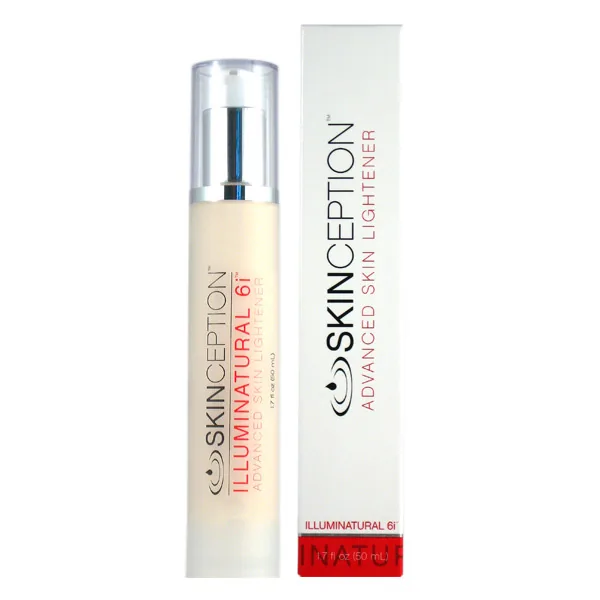
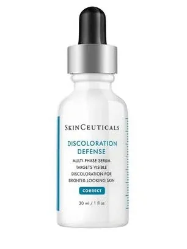

Illuminatural 6i™ Review: How to Erase Stubborn Dark Spots Without Bleaching Your Face Off
By Derm Audit Editorial Team • Updated August 2026 • 6 Min Read
Manufacturer Availability Notice: Illuminatural 6i™ is currently undergoing laboratory restock at Skinception. Official checkout links route directly to the central Skinception manufacturer catalog.


UV radiation and inflammation trigger the tyrosinase enzyme in melanocyte factories to pump dark pigment.
Alpha-Arbutin gently locks tyrosinase catalytic sites without toxic chemical bleaching (zero hydroquinone).
Old dark pigment cells naturally slough off via skin renewal, revealing a clear, uniform glow.
Executive Summary: Illuminatural 6i® delivers botanical melanin suppression through dual-action actives without toxic hydroquinone. By competitively blocking the tyrosinase enzyme with Alpha-Arbutin and preventing pigment transfer into surface keratinocytes with Niacinamide, it clears localized discoloration safely across all skin tones without the risk of permanent hypopigmentation or skin thinning.
What Causes Dark Spots & Hyperpigmentation?
Imagine you have an office printer in your bedroom. Normally, it prints clean, evenly spaced sheets.
Now imagine you pop a big pimple, get a sunburn, or scrape your knee. Your skin's pigment cells (called melanocytes) freak out! They think the skin is under severe attack, so they violently jam down on the button: "PRINT 1,000 COPIES IN JET BLACK INK!"
That dark pigment is called melanin. Once that extra ink gets dumped into your upper skin cells, it gets trapped. Even long after the pimple is gone, you're left staring at a dark, annoying blotch that takes months to fade.
💀 The Horror of Chemical Bleaching Creams (Hydroquinone):
Back in the day, companies used a harsh chemical called Hydroquinone. It literally bleaches and poisons your skin cells. It's so toxic that it was officially banned across the European Union, the UK, and Japan because it causes permanent blue-gray skin damage (called *ochronosis*). Please don't bleach your face with laundry-style chemicals!
How Illuminatural 6i™ Peacefully Hits "Cancel Print Job"
Instead of nuking your skin with toxic bleach, Illuminatural 6i™ uses 6 gentle plant-based lighteners that act like a peace treaty for your pigment cells:
- Phase 1: Unplug the Printer (Tyrosinase Inhibition) — Blocks the *tyrosinase* enzyme so new melanin pigment cannot be manufactured.
- Phase 2: Block the Delivery Truck (Melanosome Transfer) — Traps existing dark pigment so it cannot travel up to the visible surface of your face.
- Phase 3: Fast-Forward Cell Renewal (Desquamation) — Gently sweeps away old stained surface skin cells so fresh, bright, glowing skin takes their place in 28 days.
The 4 Key Plant-Based Brightening Actives
1. Alpha-Arbutin (1.0%)
Nature's Safe Lightener: Extracted from bearberry plants, it binds directly to the pigment enzyme and shuts it off without damaging healthy cells.
2. Niacinamide (5.0%)
The Delivery Blockade: Vitamin B3 stops melanosome packages from migrating into surface skin while building a rock-solid moisture barrier.
3. Whitonyl® Red Algae (4.0%)
The UV Signal Shield: French red algae extract that cuts off the communication signals triggered by sun exposure.
4. Stable Vitamin C + Sodium Lactate
The Glow Exfoliator: Magnesium Ascorbyl Phosphate fades oxidized melanin, while Sodium Lactate gently sheds dark surface cells.
Sugimoto K, et al. Inhibitory effects of Alpha-Arbutin on melanin synthesis in cultured human melanoma cells and a three-dimensional human skin model. Biological and Pharmaceutical Bulletin / PubMed PMID: 15056856.
Formula Matchup: Illuminatural 6i™ vs. SkinCeuticals Discoloration Defense
| Feature / Specification |
Illuminatural 6i™
Top Pick: Botanical Brightening
|
 SkinCeuticals Defense
Market Benchmark
|
|---|---|---|
| Key Active Mechanism | Multi-Pathway Botanical Action: Alpha-Arbutin, Whitonyl®, Niacinamide, and Vitamin C block synthesis and transfer safely. | Triple-action chemical brightening with Tranexamic Acid, Kojic Acid, and Niacinamide. |
| Skin Barrier Preservation | Nourishing. Preserves healthy skin thickness and hydration. | Contains 5% HEPES, a buffering agent that deliberately thins the lipid barrier for penetration. |
| Irritation & Redness Risk | Very Low. Free of hydroquinone, mercury, steroids, and harsh bleaching agents (per manufacturer). | Moderate-to-High. Kojic acid frequently triggers contact redness and stinging on sensitive skin. |
| Money-Back Guarantee | 90-Day Money-Back Guarantee | No guarantee on opened luxury bottles. |
| Retail Price | $59.95 (Direct manufacturer price) | $108.00 (Luxury retail markup) |
| Best Action | Check Restock Status | View SkinCeuticals |
What We Love:
- 6 synergistic natural brighteners (zero hydroquinone or bleach)
- Fades acne spots, sun damage, freckles, and melasma
- Ronaflair® optical minerals provide an instant brightening filter
- Safe for sensitive zones (face, neck, chest, inner thighs, underarms)
- Protected by a full 90-day money-back guarantee
Things to Keep in Mind:
- You MUST wear sunscreen during the day to prevent sun spots from returning
- Deep hyperpigmentation requires the full 28-day skin renewal cycle
The 60-Day Dark Spot Clearing Timeline
Days 1 – 14
Optical mineral diffusers blur spot visibility instantly. New melanin production drops to zero.
Days 15 – 35
As your 28-day skin cycle turns over, stained surface cells flake away. Dark marks visibly fade.
Days 36 – 60+
Even, uniform, luminous skin tone. Post-acne redness and sun blotches are fully normalized.
Frequently Asked Questions
Can I use Illuminatural 6i on post-acne marks?
Yes! It is one of the most popular uses for Illuminatural 6i. It rapidly calms post-inflammatory hyperpigmentation (PIH) and clears stubborn red and brown acne spots.
Will it lighten my normal skin color?
No. Illuminatural 6i only interrupts hyperactive, panicked melanin production in dark spots. It will not bleach or alter your natural baseline skin tone.
Ready for Flawless, Even, Glowing Skin?
Say goodbye to stubborn dark marks safely with Skinception's botanical science and 90-day money-back guarantee. Note: Official links direct to the central Skinception catalog while Illuminatural 6i™ restock completes.
Check Restock Status